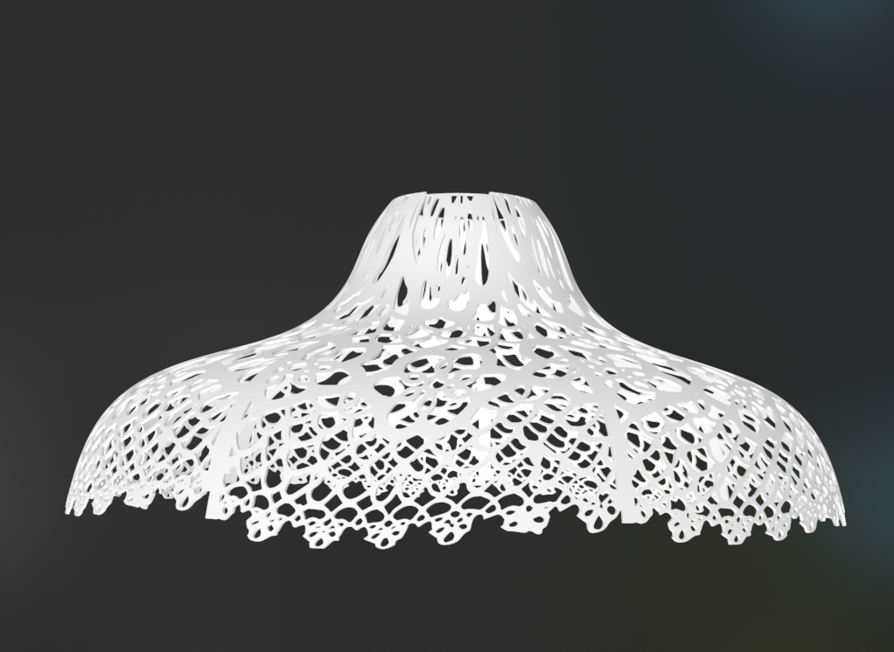
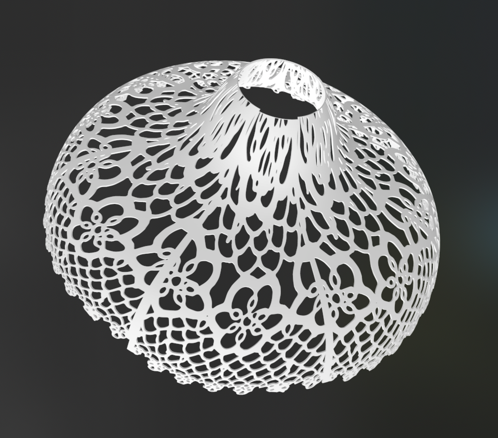

Assignment 4: Lamp
Week One
Brainstorm
Brainstorm
I started with sketching to brainstorm the kind of lamp that I want to make. I decided I want to make a hanging pendant lamp to hang over my desk. I used one of my desk lamps to estimate the scale that I wanted the lamp to be.
Bracket
I decided to start by designing the wall bracket since I still wasn't completely sure how I wanted to finished the lampshade part. I designed an "L" shape bracket with hooks for holding the lamp cord. I also designed some holes on the back for nails because I don't want the nails to show from the front once it is installed.
When I went to print the bracket, I had to immediately go back to Rhino because I didn't consider in my first draft that the arm was too long to actually be printed with my printer. Once I had the correct dimensions down, I had to figure out in which orientation I wanted to print the bracket. I had the Generate Supports setting checked to support the base of the bracket while printing, but it was filling in the inside of the nail holes which would be hard to remove. I ended up setting so it would only generate supports from the build plate, which addressed that situation.
The bracket printed successfully! I temporarily installed it next to my 3D printer so it is accessible for prototyping the lampshade. I'm happy with my placement of the hooks, since I can choose whether the cord should lay diagonally or align along the bracket.
Lampshade
I measured the parts of my lamps innerds to determine what dimensions will be required for the lampshade to stay on the lamp. I decided the top opening of the lamp should be 45-30 mm in diameter so that it will fit over the cord but still stay in place over the lightbulb portion. The lampshade should be no more than 23cm in radius or else it will bump into the wall.
First Attempt
I knew the shape of lampshade I wanted to try, and I also wanted to play with shadows by incorporating a cool design with cutouts on the shade—similar to this example that was shown in class: 3D Print Lace Lapm - LPJacques Design. I tried to use the pattern from a doily that my mom has to create a cutout lampshade. In the end, I don't like what it looks like so I am either going to start over or modify my design before trying to print it.
Here is my process for designing an ugly lampshade:
I started in grasshopper by creating a surface in the shape of the lampshade. I created a bunch of circles at different heights and made the radii and height separately parameterized for each - I wanted a lot of adjustability. Then I lofted a surface between all of the curves, and played around with parameters until I liked the final shape.
My mom sent me a picture of a doily she has with a neat pattern. I tried to extract the pattern to apply to the lampshade using FlowAlongSrf. Getting the pattern out was my main struggle of this situation - it looks like FlowAlongSrf works best if it is taking a rectangular pattern and mapping it onto the curve. I didn't really know how to take a circular doily and make it into a rectangular pattern but I tried my best using the warp tool in photoshop.
I did a test print of the pattern to see how it interacts with the light. One version I put a thin (1.5mm) layer of material behind the pattern to see if any light was able to shine through, but it didn't work out so well, I think because I only have black PLA.

I then extracted the curves in Illustrator, imported into Rhino, extruded and repeated the pattern onto a rectangular plane. I got the size of the rectangle with the command CreateUVCurve, which apparently projects the lamp curve onto the xy plane. Then I used FlowAlongSrf to put the surface in the shape of my lampshade curve.
I used this tutorial on YouTube to help me figure out how to do it:
How to Create Pattern on a Vase Design: Rhino 3D CAD Technique #23 (2019)
 
If I was going to continue with this design I would have cleaned it up so the top rim is even and maybe adjusted the bottom as well. But I don't really like how it looks overall. Aesthetically the pattern is too stretched out on the top part of the lamp, and I feel like the holes will be too big for adequate light blocking.
I haven't decided yet if I want to keep working on the pattern in order to address my issues with my current design, or if I want to completely start over with a new lampshade . So my next plan is to work on sketching and considering alternatives before spending a bunch of time improving my pattern.
Week Two
This week, I actually went back to the drawing board and sketched out alternate lamp designs to see if I liked any better than my current direction. I even started designing a more bucket-like shaped lampshade with a geometric pattern, but at the end of the day I think I still prefer the pattern of my original design.

So I went back to my original design and made some adjustments before being happy enough to print it. I modified the shape of the shade, and added a band to the top of the lamp to address some of my issue with the pattern being stretched out at the top.
I decided I was spending too much time dithering over the pattern and to just print the dang thing. I added a brim to the base to help with stability.

I am pretty happy with the result! With the lamp hanging above my desk I was able to remove my desk lamp and take back some precious space on my tiny desk. I think if I were to continue iterating on the design I would make the pattern holes even smaller, and make the base of the lampshade flat to give it a cleaner, less dainty look.